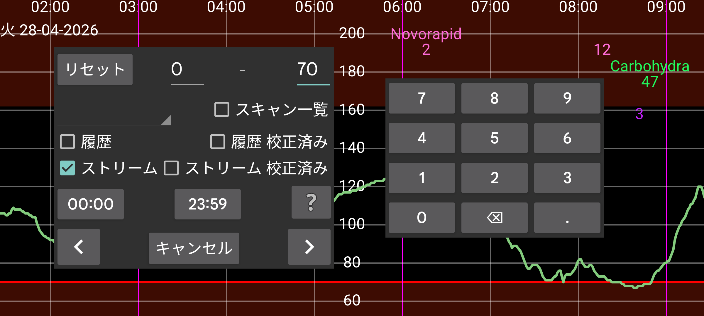

検索を使って血糖値や入力された数値を見つけられます。
指定した数値の 間にある値を検索します。例: 10 と 999 の間の値を検索するには 10 – 999。
血糖値はスキャン、履歴、ストリームに分けられます。
スキャン: スキャン直後に表示される値。生のスキャンを検索します。
履歴: 生の履歴値を検索します。(センサー上に保存され、このアプリに転送される定期測定値。FreeStyle Libre 2 センサーは 15 分ごとに値を保存し、NFC でこのアプリに転送します。FreeStyle Libre 3 センサーは 5 分ごとに値を保存し、Bluetooth 経由で転送します。)
校正済み履歴: 校正済み履歴値を検索します。
ストリーム: 生のストリーム値を検索します(FreeStyle Libre 2 センサーから Bluetooth でこのアプリに送信される 1 分間隔の定期測定値)。
校正済みストリーム: 校正済みストリーム値を検索します。
インスリン、消費、運動データを入力した場合、スピナーで対応するラベルを選択し、興味のある数値範囲を指定して検索できます: 例えば、サイクリングを 50 から 100 の間で。
興味のある時刻も指定できます。夜の 22:00 から朝の 07:00 までの低血糖に興味があれば、最初の時刻表示(開始時 00:00 と表示)を押して 22:00 に変更し、2 つ目の時刻表示を 07:00 に変更します(ストリームと/または履歴を選択し、0 から 3.9 mmol/L (70 mg/dL) の値範囲を指定する必要もあります)。
矢印をタッチすると指定方向で検索を開始します。
リセットはすべての検索値を開始時の値に戻します。
設定 の 記録のラベルで、どのラベル(例: 炭水化物)が食事に関連付けられているかを選択できます。「新規記録」でこのラベルを選択すると、「食事」ボタンが現れます。タッチすると、食事を構成要素から入力できます。ここでスピナーでこのラベルを選択すると、画面上部にボックスが現れ、検索する食材と、その食材の最小量を任意で指定できます。